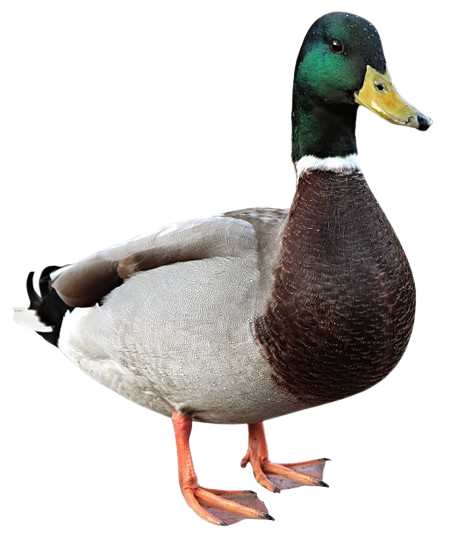

• Head: A vibrant, iridescent emerald-green head.
• Neck: A crisp white collar or ring separating the green head from the chest.
• Chest & Body:b> A rich chestnut-brown breast with a light gray body and wings.
• Bill & Feet: A bright yellowish-green bill and striking orange webbed feet.
• Dabbling Nature: Mallards are known as "dabbling ducks". Instead of diving fully underwater, they feed by tipping forward—putting their heads down and tails up in the air—to forage for food near the surface.
• Diet: They are flexible omnivores. Their diet includes aquatic plants, seeds, insects, small fish, and invertebrates.
• Habitat: You can find them in almost any wetland habitat, including ponds, lakes, marshes, and slow-moving rivers across the Northern Hemisphere. They are highly adaptable and frequently live close to humans in urban parks.
• Ancestry: The mallard is incredibly significant in agriculture as it is the direct ancestor of nearly all domestic duck breeds kept on farms today.